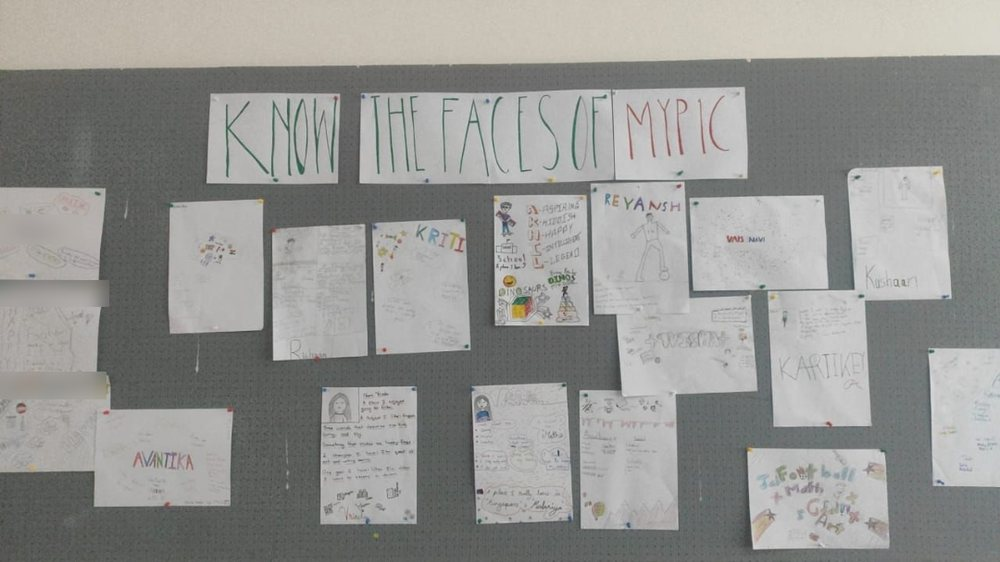

The situation
"Tell me and I forget. Teach me and I remember. Involve me and I learn." (Benjamin Franklin.) I have always believed that classrooms are not just physical spaces. They are living environments that should reflect the people inside them, which is why I advocate for a student-led classroom setup and decoration. When students create something for their walls, they do not just decorate, they own the space.
What I tried
This academic year, I stepped back from the traditional teacher-led decoration model and stepped forward as a facilitator and leader. As a homeroom teacher for MYP 1, I invited my students to co-create our classroom environment. The first thing we did was a wall titled "Faces of MYP 1".
What happened
The results were heartwarming. Students poured their personalities onto paper, with their interests, quirks and creativity proudly on display. The space transformed into theirs.

What I learned
Now, when they walk into class, they do not just enter a room. They enter their room. All teachers are leaders, and the best leaders know when to step aside and let others shine.